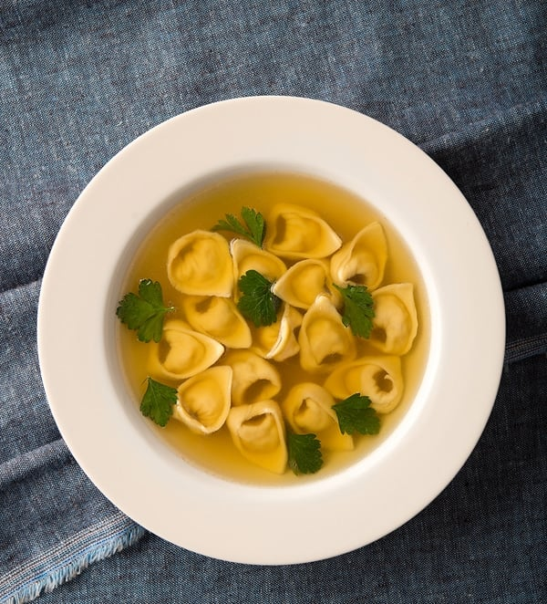

Tortellini al brodo

Tortellini al brodo is a traditional Italian dish that consists of
tortellini pasta in a broth or consommé.
Ingredients
- 1 pound of fresh or dried tortellini
- 8 cups of chicken or beef broth
- Salt and pepper, to taste
- Grated Parmesan cheese, for serving
- Fresh parsley, chopped for garnish (optional)
Steps
- Bring a large pot of water to a boil and add a pinch of salt.
-
Add the tortellini to the boiling water and cook according to the
package instructions. Fresh tortellini will take about 2-3 minutes to
cook, while dried tortellini will take about 5-7 minutes.
-
While the tortellini is cooking, heat the broth in a separate pot over
medium heat.
-
Once the tortellini is cooked, use a slotted spoon to remove it from the
pot and add it to the broth.
-
Let the tortellini simmer in the broth for a few minutes to absorb the
flavors.
- Season the broth with salt and pepper to taste.
-
Serve the tortellini al brodo in bowls and top with grated Parmesan
cheese and chopped parsley.
Optional: you can add other ingredients to the broth such as diced
carrots, celery or onion to make a more complex flavor or add some diced
pancetta or prosciutto for a richer flavor.
Note: You can use chicken or beef broth or make your own consommé,
traditionally this dish is made with a consommé, which is a clear broth
made from meat, bones and vegetables that have been simmered for hours.
Go back to menu